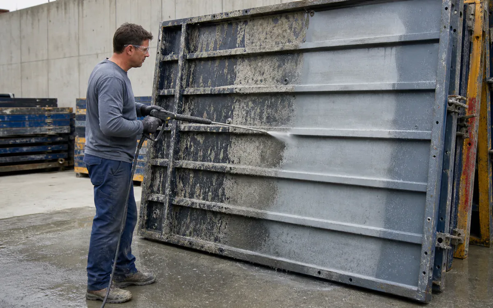
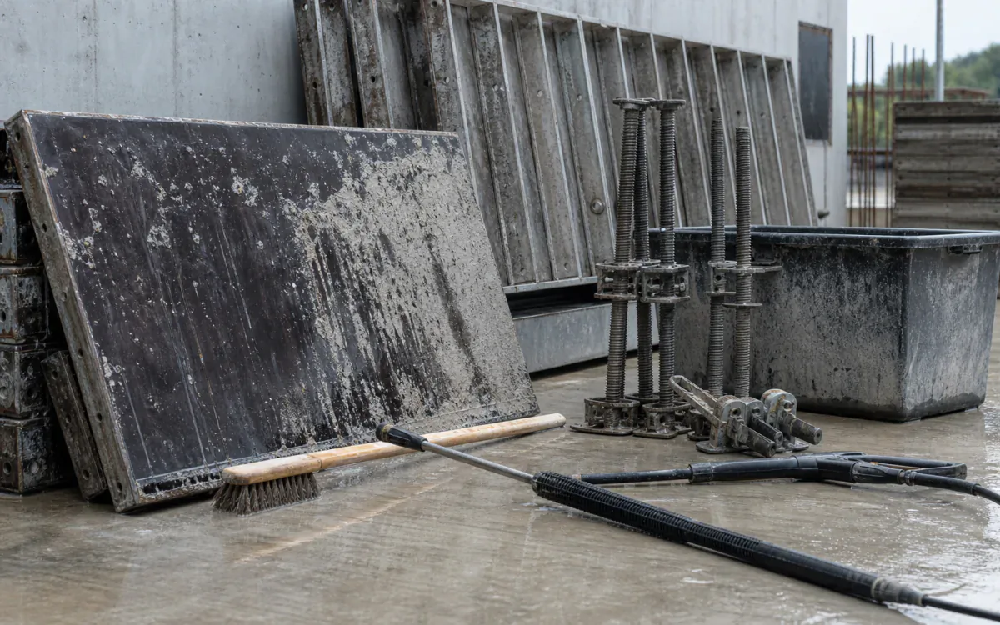

Active jobs need chemistry that behaves.
Concrete cleaning, equipment maintenance, rust removal, and site cleanup on active jobs.
- CleanConcrete pumps, forms, mixers, hand tools, compact equipment, vehicle exteriors, and finished masonry
- RemoveCement film, form oil, hydraulic grease, asphalt transfer, rust, and mineral efflorescence
- MethodDry removal first, then targeted wet cleaning, agitation, and contained low-pressure rinse
- BoundaryFollow silica controls, equipment OEM limits, coating compatibility, stormwater plans, and site containment. Do not acid-clean uncured or architecturally sensitive concrete without approval.
- Open task controls and documents
Why VertKleen fits Construction.
Concrete, equipment, and exterior cleanup on active sites often puts acids and bleach near working crews. VertKleen Descaler clears concrete scale and calcium, HCR removes rust, and LAM3 handles biological growth on exteriors with simpler storage and lighter exposure risk.
Review field evidence
What Construction buyers need documented first.
Hydrochloric acid (muriatic acid), bleach, and caustic degreasers used for concrete cleanup, equipment, pavers, and exterior biological growth.
Bundle: Descaler for concrete and calcium, HCR for rust, CR HD for equipment grease, LAM3 for exterior growth.
Representative cleaning tasks for Construction.
Representative scenes show common task setups—not field evidence or final operating instructions.


VertKleen products for Construction.
VertKleen options for Construction workflows.
Field proof from Construction sites.
Documented work from the VertKleen field library.


Clean concrete-handling equipment, forms, tools, and fleet assets without spreading silica-bearing solids or oily wash water.
Task controls first. Product choice follows the asset, deposit, materials, operating window, and discharge route.
- Task
- Clean concrete-handling equipment, forms, tools, and fleet assets without spreading silica-bearing solids or oily wash water.
- Asset / substrate
- Concrete pumps, forms, mixers, hand tools, compact equipment, vehicle exteriors, and finished masonry
- Soil / deposit
- Cement film, form oil, hydraulic grease, asphalt transfer, rust, and mineral efflorescence
- Starting chemistry
- VertKleen Descaler, VertKleen CIP HCR, VertKleen CR HD, VertKleen LAM3
- Concentration
- Choose the weakest current-label dilution that removes the identified cement, oil, or mineral soil after a hidden-area compatibility test.
- Process controls
- Record surface temperature, controlled wet dwell, brush or low-pressure agitation, and rinse volume; prevent mist and never dry-grind a chemical-cleaning residue.
- Shutdown / containment
- Follow silica controls, equipment OEM limits, coating compatibility, stormwater plans, and site containment. Do not acid-clean uncured or architecturally sensitive concrete without approval.
- Verification endpoint
- No visible cement or oily film, clean white-wipe where practical, acceptable finish in the test area, and documented wash-water recovery.
Review the current safety and application file.
Confirm revision, product identity, material compatibility, and application scope before site approval.
Bring us your Construction cleaning task.
The request opens with asset, soil, operating conditions, materials, wastewater route, and buying deadline already prompted.